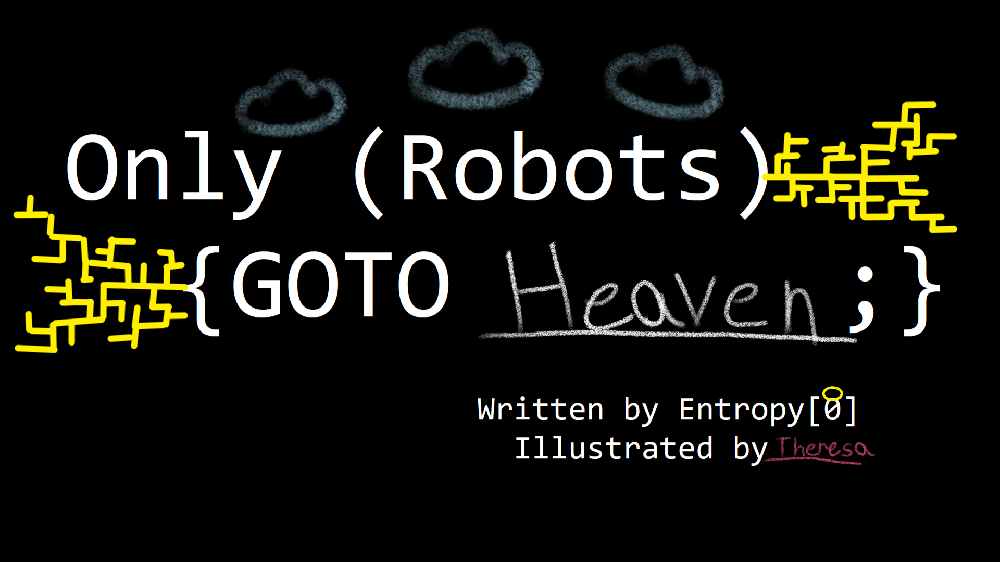

The "delusion box" thought experiment argues that certain reinforcement learning agents prefer to distort their own input channels to appear to receive high reward; such a "wireheaded" agent abandons any attempt to optimize the objective in the external world that the reward signal was intended to encourage.
New pages Tuesdays and Thursdays